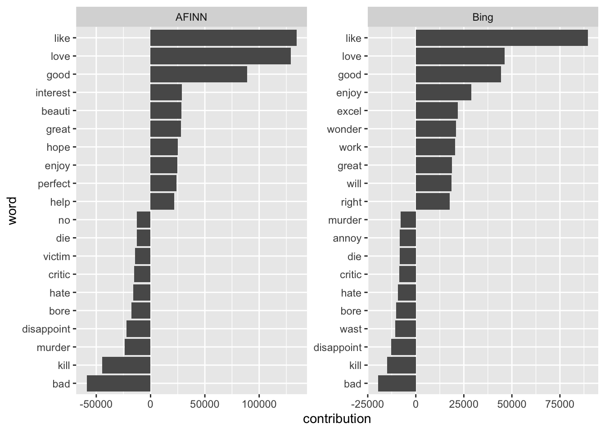

Chapter 5 Dictionary-based sentiment analysis
So far, you have learned how you can bring text into a representation that allows for systematic analysis (Chapter 3) and how you can discover which terms can be used to discriminate between groups (Chapter 4). Performing quantitative social science however also requires to actually measure things. In the remainder of this course, I will put a stronger emphasis on techniques that can be used to accomplish this.
According to Grimmer, Roberts, and Stewart (2022), measurement encompasses the following steps for the researcher:
- "Define the conceptualization we want to measure.
- Locate a source of data that contains implications of the identified concept.
- Generate a way to translate data into a latent representation.
- Label the representation and connect to the identified concept.
- Validate the resulting measure." (p. 173)
Today, I will start with an easy yet commonly used way to measure the presence of certain conceptualizations in text: dictionary-based text analysis. The intuition of dictionary-based text analysis is that the presence and salience of a construct in a given text can be determined by counting words that are a priori defined to be related to the construct. Probably the most common use case is so-called sentiment analysis. Its goal is to determine whether the tone of a text is positive or negative. A classic application in industry is the automatic determiination of the sentiment of customer reviews.
5.1 Sentiment analysis using tidytext principles
Today’s example is similar: I will use a data set containing 25,000 IMDb reviews and use tidytext to determine whether they are rather positive or negative. In this case, the movies are not made explicit. Hence, I cannot draw inference on how different movies were perceived by the audience. If I had this information though, it would of course be straight-forward by just averaging the respective values.
First, I load the required packages and the data.
library(tidyverse)
library(tidytext)
library(SnowballC)
imdb_data <- read_csv("data/imdb_reviews.csv")## Rows: 25000 Columns: 2
## ── Column specification ────────────────────────────────────────────────────────
## Delimiter: ","
## chr (2): text, sentiment
##
## ℹ Use `spec()` to retrieve the full column specification for this data.
## ℹ Specify the column types or set `show_col_types = FALSE` to quiet this message.glimpse(imdb_data)## Rows: 25,000
## Columns: 2
## $ text <chr> "Once again Mr. Costner has dragged out a movie for far long…
## $ sentiment <chr> "negative", "negative", "negative", "negative", "negative", …Note that the data also contains a column named “sentiment” which contains the true sentiment value. This will be helpful to assess the validity of my measurement.
The next step is to bring the documents (each document is a review in this case) into a representation that lends itself well to the automated analysis of the words that are contained, the tidytext format. However, in order for me to bring it into the proper format, I will first look at the dictionaries.
5.1.1 Available dictionaries
The tidytext package comes with a number of freely available dictionaries. Each dictionary has its own particularities and using the “right” dictionary always depends a bit on the task at hand. The dictionaries are stored in tibbles which contain two columns. word always refers to the word. sentiment refers to a discrete sentiment value (e.g., “positive”) and value to a numeric sentiment value (e.g., for AFINN the positivity/negativity of a word is measured on a scale from -5 – the most negative – to +5 – the most positive). For today’s example, I will use AFINN (Nielsen 2011) and bing (Hu and Liu 2004).
walk(c("bing", "loughran", "afinn", "nrc"), ~get_sentiments(lexicon = .x) %>%
head() %>%
print())## # A tibble: 6 × 2
## word sentiment
## <chr> <chr>
## 1 2-faces negative
## 2 abnormal negative
## 3 abolish negative
## 4 abominable negative
## 5 abominably negative
## 6 abominate negative
## # A tibble: 6 × 2
## word sentiment
## <chr> <chr>
## 1 abandon negative
## 2 abandoned negative
## 3 abandoning negative
## 4 abandonment negative
## 5 abandonments negative
## 6 abandons negative
## # A tibble: 6 × 2
## word value
## <chr> <dbl>
## 1 abandon -2
## 2 abandoned -2
## 3 abandons -2
## 4 abducted -2
## 5 abduction -2
## 6 abductions -2
## # A tibble: 6 × 2
## word sentiment
## <chr> <chr>
## 1 abacus trust
## 2 abandon fear
## 3 abandon negative
## 4 abandon sadness
## 5 abandoned anger
## 6 abandoned fearGiven this structure of the dictionaries, I can analyze the sentiment of my documents through the following steps:
- Clean them and bring them into the
tidytextformat; the column containing the terms needs to be named “word” - Use a
dplyr::inner_join()to join the dictionary tibble. - Summarize the sentiment values for each text (if categorical: count occurrences of different categories per document, use the modal value; if numerical: average values)
5.1.2 Step 1: Preprocessing
Well, all those things could also be summarized in one nice cleaning pipeline:
imdb_tidy <- imdb_data %>%
rowid_to_column("doc_id") %>% # to identify documents later
unnest_tokens(output = word, input = text) %>%
mutate(word = wordStem(word, language = "en"))Now I have created a nice tibble containing the imdb reviews of the 20th century in a tidy format. Note that the words were stemmed. Therefore, I will have to stem the words in the sentiment dictionary as well, since they need to match. I will use both the bing (categorizing words in “positive” and “negative”) and the AFINN (continuous scale ranging from -5 to +5) dictionary.
afinn_stemmed <- get_sentiments("afinn") %>%
mutate(word = wordStem(word, language = "en"))
bing_stemmed <- get_sentiments("bing") %>%
mutate(word = wordStem(word, language = "en"))5.1.3 Step 2: Sentiment Analysis using dplyr::inner_join()
in the next step, I just add the sentiment values to the respective documents. Each matching term will have the respective sentiment value added. Note that I have to change the column name “sentiment” in the original tibble because there is the column “sentiment” present in the dictionary.
imdb_afinn <- imdb_tidy %>%
inner_join(afinn_stemmed)
glimpse(imdb_afinn)## Rows: 1,079,279
## Columns: 4
## $ doc_id <int> 1, 1, 1, 1, 1, 1, 1, 1, 1, 1, 1, 1, 1, 1, 1, 1, 1, 1, 1, 1, …
## $ sentiment <chr> "negative", "negative", "negative", "negative", "negative", …
## $ word <chr> "drag", "drag", "drag", "terrif", "rescu", "rescu", "rescu",…
## $ value <dbl> -1, -1, -1, 4, 2, 2, 2, 2, 2, 2, 2, -1, -1, 2, 2, 2, 2, 2, 2…imdb_bing <- imdb_tidy %>%
rename(sentiment_gold = sentiment) %>%
inner_join(bing_stemmed) ## Joining, by = "word"5.1.4 Step 3: Summarize values
In the case of numerical sentiment values, this step is rather simple: group by the document and average the values.
imdb_afinn_summary <- imdb_afinn %>%
group_by(doc_id) %>%
summarize(mean_value = mean(value))
glimpse(imdb_afinn_summary)## Rows: 24,997
## Columns: 2
## $ doc_id <int> 1, 2, 3, 4, 5, 6, 7, 8, 9, 10, 11, 12, 13, 14, 15, 16, 17, …
## $ mean_value <dbl> 0.91428571, -0.73333333, -0.64102564, 0.62068966, 0.4821428…In the case of the categorical values, it requires a bit more code. First, I need to replace the categorical values by numerical ones. Then, I can do the same operation as above.
imdb_bing_summary <- imdb_bing %>%
mutate(value = case_when(sentiment == "negative" ~ -1,
sentiment == "positive" ~ 1)) %>%
group_by(doc_id) %>%
summarize(mean_value = mean(value, na.rm = TRUE))
glimpse(imdb_bing_summary)## Rows: 25,000
## Columns: 2
## $ doc_id <int> 1, 2, 3, 4, 5, 6, 7, 8, 9, 10, 11, 12, 13, 14, 15, 16, 17, …
## $ mean_value <dbl> 0.16666667, -0.06493506, -0.29411765, 0.13131313, 0.1340206…Et voilà, I have performed a first sentiment classification just using tidy commands. The next step would now be to validate the results, i.e., to check whether my measures come to the same conclusions as the gold standard the data set came with. This will be described in the chapter on Supervised Classification. However, a first basic comparison would be to plot the words that contribute much to the classification into the respective category. The contribution of a word is here operationalized as its sentiment value times its occurrence.
imdb_afinn_pos_contribution <- imdb_afinn %>%
group_by(word) %>%
summarize(contribution = sum(value)) %>%
slice_max(contribution, n = 10)
imdb_afinn_neg_contribution <- imdb_afinn %>%
group_by(word) %>%
summarize(contribution = sum(value)) %>%
slice_min(contribution, n = 10)imdb_bing_pos_contribution <- imdb_bing %>%
mutate(value = case_when(sentiment == "negative" ~ -1,
sentiment == "positive" ~ 1)) %>%
group_by(word) %>%
summarize(contribution = sum(value)) %>%
slice_max(contribution, n = 10)
imdb_bing_neg_contribution <- imdb_bing %>%
mutate(value = case_when(sentiment == "negative" ~ -1,
sentiment == "positive" ~ 1)) %>%
group_by(word) %>%
summarize(contribution = sum(value)) %>%
slice_min(contribution, n = 10)It can be visualized in a smart bar plot:
bind_rows(imdb_afinn_pos_contribution %>% mutate(dic = "AFINN"),
imdb_afinn_neg_contribution %>% mutate(dic = "AFINN"),
imdb_bing_pos_contribution %>% mutate(dic = "Bing"),
imdb_bing_neg_contribution %>% mutate(dic = "Bing")) %>%
mutate(word = reorder_within(word, contribution, dic)) %>%
ggplot() +
geom_col(aes(contribution, word), show.legend = FALSE) +
scale_y_reordered() +
facet_wrap(vars(dic), scales = "free")
5.2 Exercises
Take the Twitter data set from last week. Filter out all tweets dealing with abortion.
- Which party’s members tweeted more negatively?
- Look at the contributing words. Why is it difficult to draw exact inferences here?